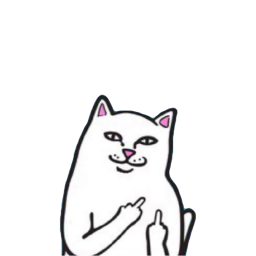

Существует множество видов экстремального катания на горных велосипедах, и под каждый из них выпускаются определенные модели байков, которые обладают своими конструктивными особенностями:
Кросс-кантри – наиболее популярная спортивная дисциплина MTB, подразумевающая динамичное катание по пересеченной местности со спусками, продолжительными подъемами, а также техническими и скоростными участками.
Сами соревнования проходят на различных трассах, на которых присутствуют как естественные, так и искусственные препятствия.
Велосипеды для кросс-кантри – наиболее универсальные, так как отлично подходят для каждодневной эксплуатации (в том числе – и в городских условиях).
Кросскантрийный «двухколесник» должен обладать легкой и прочной рамой (вес в данном случае играет особую роль), контактными педалями, фиксирующими ноги гонщика, а также ободные или дисковые тормоза. Такие велосипеды могут быть как с ригидной рамой, так и с одной или двумя подвесками.
Олл-маунтин – разновидность маунтинбайка, расположившегося между кросс-кантри и фрирайдом, но еще и с элементами эндуро. Такие велосипеды созданы для скоростного передвижения по несложной горной местности и способны без каких-либо проблем выдерживать серьезные нагрузки, однако также приспособлены для простого катания в городской среде.
«Железные кони» для данной дисциплины имеют ряд конструктивных требований: вес порядка 13-17 кг; подвески (может быть и передняя, и задняя) с ходом 130-170 мм; ободные или дисковые тормоза.
Фрирайд – стиль катания на горном велосипеде (и, по совместительству, одна из дисциплин велоспорта), который подразумевает езду по сложным трассам, изобилующим как естественными природными, так и искусственно возведенными препятствиями. Фрирайд требует не только хорошей физической подготовки райдера, но и использование специально приспособленных с технической точки зрения «двухколесников».
Для этой дисциплины применяются, как правило, мощные полноподвесные байки весом не более 18 кг, оснащенные передней вилкой с ходом 140-250 мм и задним амортизатором с ходом 100-200 мм. Тормоза допускаются только дисковые (желательно с гидроприводом), трансмиссия в основном имеет до 10 скоростей, а колеса должны обладать широким профилем и «цепким» протектором.
Фэтбайк – горный велосипед на толстых покрышках, демонстрирующий повышенную проходимость: на нем можно без проблем ехать по различным рыхлым поверхностям, среди которых снег, высокая трава, песок и т.д.
Ключевой особенностью таких «железных коней» как раз таки и являются колеса с ободами шириной от 65 до 100 мм и толстенными шинами (давление в камерах обычно варьируется от 0.2 до 2 атмосфер – в зависимости от типа почвы основной части маршрута и стиля езды).
Эндуро – дисциплина велоспорта, заключающаяся в агрессивном катании по бездорожью и на специализированных спортивных трассах, которые заполнены валунами, бревнами и различными другими препятствиями.
Велосипеды в данном случае должны обладать легкой, но прочной рамой (в идеале – из карбона, но допускается и из алюминиевого сплава), подвеской обоих колес (спереди – с ходом не менее 150 мм, сзади – 170 мм), трансмиссией с 10-ю и более скоростями (но в передней части устанавливается лишь одна звезда), широким рулем для улучшения маневренности и исключительно дисковыми тормозами с гидравлическим приводом.
Даунхилл – экстремальная гоночная велодисциплина, подразумевающая прохождение трассы с крутыми спусками, резкими поворотами, трамплинами, обрывами и другими всевозможными препятствиями на время. Как правило, протяженность заезда составляет 1.5-2 км, и на столь небольшом участке средний перепад высот насчитывает порядка 500 метров
Велосипеды для «скоростного спуска» комплектуются рамой с особой геометрией – у нее заваленные углы подседельного штыря и наклона вилки (для улучшения стабильности). Кроме того, им полагаются: подвеска обоих колес (передняя – с ходом 203 мм, задняя – 180-200 мм); мощные тормоза с гидравлическим приводом и роторами диаметром 180-220 мм; специальные усиленные обода из алюминия или карбона; бескамерные колеса размерностью 27.5 или 29 дюймов; широкий руль с коротким выносом (для максимального контроля над «двухколесником»).
Дёрт/стрит – экстремальные дисциплины велоспорта: суть первой заключается в езде по специализированной трассе (изобилующей земляными насыпями-трамплинами), выполняя при этом прыжки и различные трюки, а второй – в катании по городским улицам, но также с прыжками и акробатическими элементами (только здесь в качестве препятствий используются трубы, бетонные плиты, бордюры, парапеты, заборы, лестницы и т.д.).
Как правило, велосипеды для дёрта и стрита имеют достаточно тяжелый вес, односкоростную трансмиссию, прочные колеса с «цепким» рисунком протектора и только задний тормоз.
Велотриал – одна из дисциплин MTB, которая заключается в преодолении препятствий (и естественных, и искусственных) на велосипеде, не опираясь при этом на посторонние предметы/поверхности ни ногами, ни руками и другими частями тела.
Байки для триала выделяются на фоне остальных компактной и легкой (из алюминия, карбона или магния), но прочной рамой, колесами величиной 26 дюймов с алюминиевыми или карбоновыми ободами и гидравлическими дисковыми тормозами (встречаются на подавляющем количестве моделей). Часто такие «двухколесники» лишены седла – из-за его ненадобности и прибавления лишнего веса.
МТБ-гибрид – велосипед, в котором сочетаются конструктивные особенности как горного, так и шоссейного «двухколесников»: у первого он заимствует прочные колеса (как правило – 28-дюймовые) с протектором, подходящим и для асфальта, и для бездорожья, переднюю амортизационную вилку и геометрию рамы, а у второго – узкие покрышки, направленные на скоростную езду по твердому покрытию, и большую звезду системы увеличенного размера.
Гибридные байки предназначены для не экстремального велотуризма и ежедневной эксплуатации. Но здесь стоит отметить, что такие «железные кони» уступают «шоссерам» в скоростных возможностях на асфальте и не позволяют чувствовать себя максимально уверенно на бездорожье (как в случае с полноценными горными моделями).
Смотрите лучше велосипеды! Тут злой котик не скроль в низ я предупреждал!
